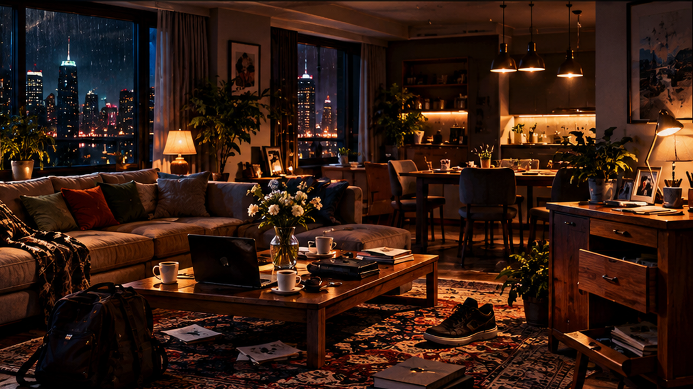
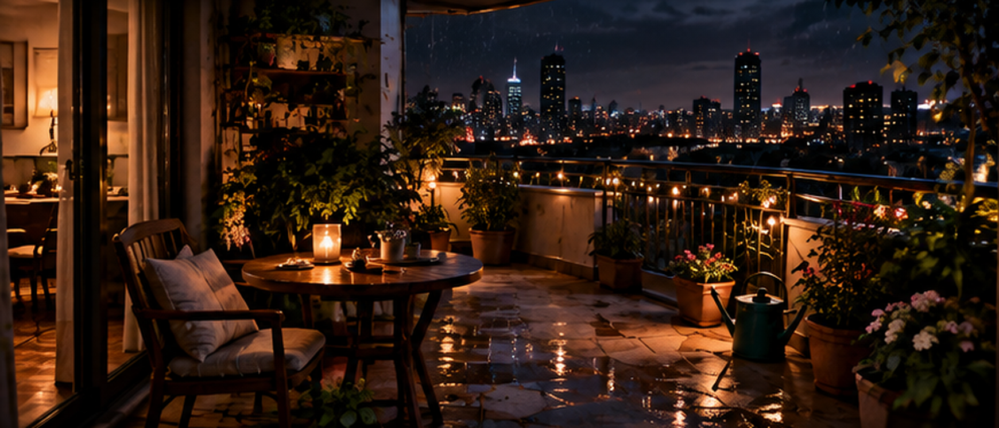
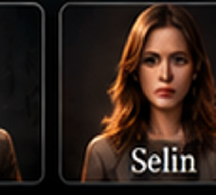

1. OLAY YERİ — SALON
Görev: Odayı araştır ve 5 önemli kanıtı bul. Her tıklanabilir nesne kanıt değildir. Takılırsan ipucu iste.

Nesneleri dikkatlice incele. 5 kanıtın hepsini bulduğunda tanık ifadeleri açılacak.

Her tanıkta ilgili kanıt otomatik gösterilir. Sen yalnızca kanıtın ifadeyi destekleyip desteklemediğine karar ver.
Görev: Kanıtlardan bildiklerini üç alana yerleştir: 20.15'ten önce, 20.15 — o sırada veya henüz bilinmiyor. Bir karta tıkla, sonra hedef alanına tıkla. Yanlış yerleştirmede ilgili kanıt sana yol gösterecek.

Artık yeni kanıt yok. Dosyayı kapatmak için bulduklarını doğru bağlantılara yerleştir. Birinin yalan söylemesi tek başına suçluluk değildir.
Bir kanıtı seç, sonra ait olduğu bağlantı kutusuna tıkla.

SELİN20.15'te nerede olduğu başlangıçta doğrulanamadı.